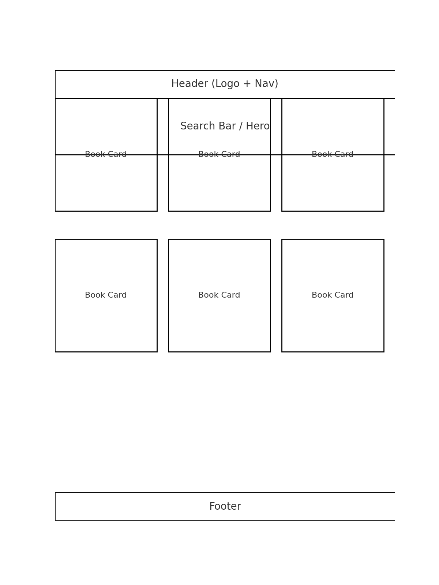
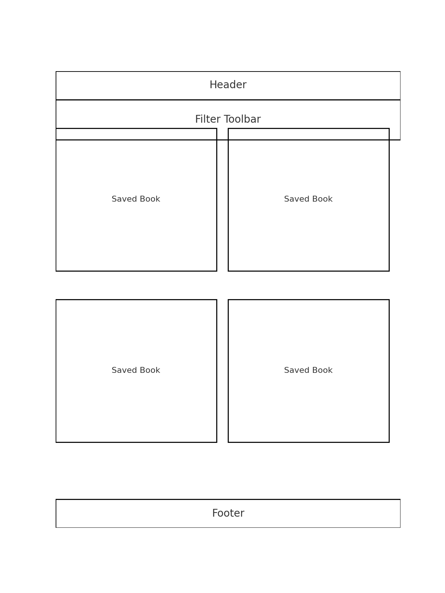
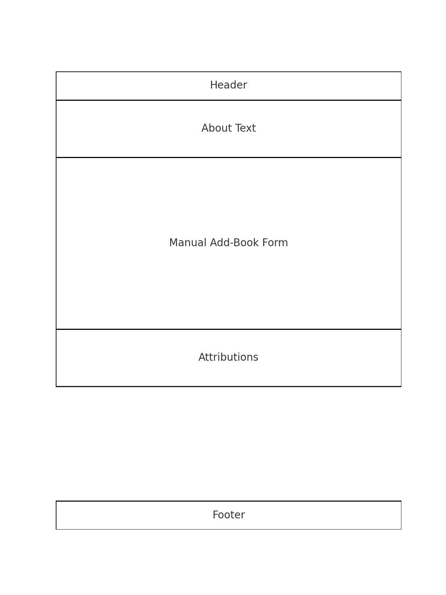

Site Name: Buffin Personal Library
The site will act as a digital catalog for searching, saving, and managing books. The logo will use a simple book icon alongside the name for clarity. (You can replace the icon later when you choose your final artwork.)
This website lets users search for books using the Open Library API, view details, and save them to a personal library. It also includes a manual add-book form with fields aligned to your Buffin Library schema (Title, Author, ISBN, Publisher, Year, Genre, Format, Location, Notes, Rating).
#b3d9ff#000000#ff9933Light blue provides an open, welcoming canvas; black ensures strong readability; orange accents draw attention to actions and interactive elements.
Include the Google Fonts import in your main stylesheet or HTML head. Use fallbacks like Arial, sans-serif and serif.
Header → Search hero → Results grid/list → Footer.

Header → Filter toolbar (author/year/favorites) → Saved grid/list → Footer.

Header → About text → Manual add-book form → Attributions → Footer.

async/await and try...catch.